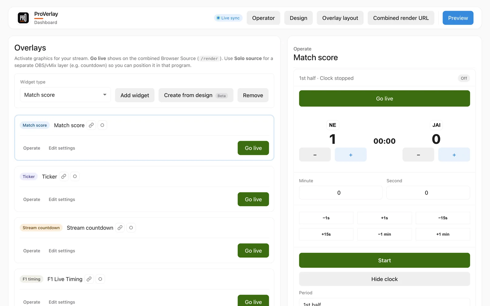
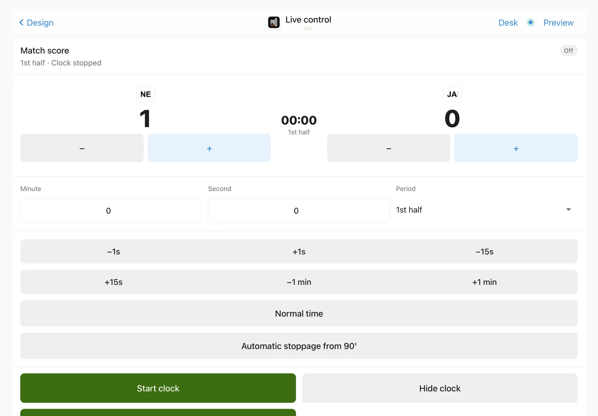
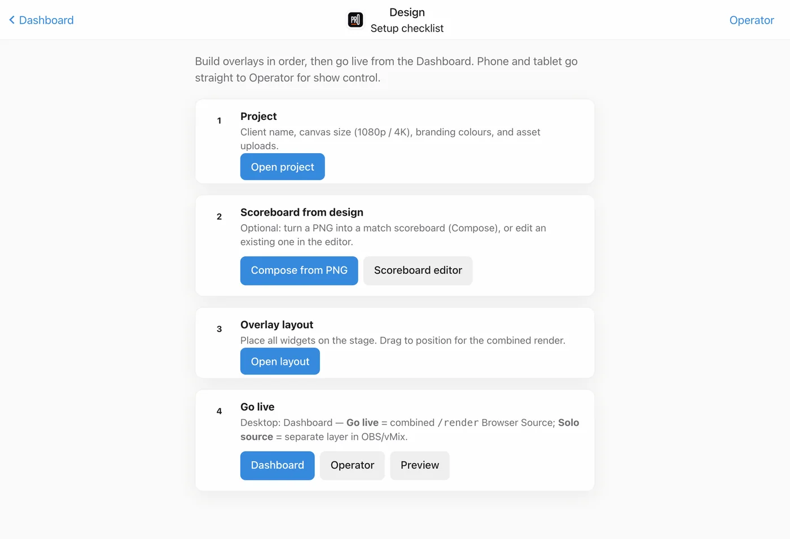

Operator op iPad & iPhone
Grote touch-knoppen voor score, klok en periode. Open / op een tablet en je komt vanzelf in het operator-paneel.
ProVerlay is een lokale graphics-server voor live producties. Bouw je overlays op de Mac, bedien ze vanaf iPad of Stream Deck en speel ze uit via één Browser Source in OBS of vMix.
Features
Geen wirwar aan panelen. Eén graphic is één kaart: zet hem live, bedien hem, klaar. De rest blijft uit beeld tot je het nodig hebt.
Grote touch-knoppen voor score, klok en periode. Open / op een tablet en je komt vanzelf in het operator-paneel.
Eén gecombineerde /render voor alles, of per widget een eigen solo-bron om in je mixer te positioneren.
Eigen Bitfocus Companion-module: tonen, verbergen, togglen en score bijwerken. Presets worden per graphic automatisch aangemaakt.
Per project eigen fonts, kleuren en assets. Brand-presets zetten in één klik de hele show in de huisstijl van je klant.
Importeer een ontwerp uit Photoshop of Figma als PNG, plaats er live tekstvelden op met de WYSIWYG-editor en speel het af.
Exporteer een complete show als .proverlay-bestand, inclusief assets en fonts, en importeer hem op een andere Mac.
De render is pure HTML en CSS, geschaald in vmin/vw. Geen particles of zware effecten: het draait soepel in de Chromium-engine van OBS en vMix, ook op een machine die al aan het encoden is.
Alles wat het dashboard kan, kan ook via HTTP. Koppel je eigen scripts, timing-data of een scorebord-feed aan dezelfde state.
Live via MultiViewer of handmatig: posities, intervallen, banden en track status in een strakke toren.
Zo werkt het
ProVerlay draait als kleine server op je Mac. Elke klik, op welk scherm ook, gaat naar dezelfde state en wordt direct naar alle andere schermen gepusht. Probeer het hiernaast.
Kies een project, voeg widgets toe en stel teams, kleuren en typografie in via /control. De setup-checklist in /design loopt het met je door.
Voeg http://localhost:2014/render toe als Browser Source (OBS) of Web Browser input (vMix), 1920×1080. De pagina is transparant.
Pak een iPad op hetzelfde wifi-netwerk, open het operator-adres dat het dashboard toont, of druk op je Stream Deck. Alles loopt synchroon.
/control/operator/renderSchermen
Een interface in de geest van macOS: veel lucht, duidelijke status en grote knoppen waar het telt. Groen betekent live, verder niets dat afleidt.



Widgets
Elke widget neemt de huisstijl van je project over: fonts, kleuren en assets. Hieronder drie voorbeeldstijlen, klik om te wisselen. Widgets met een groen label bedien je live vanaf de operator.
Scorebug · score, klok en periode, bediend vanaf iPad of Stream Deck.
Lower third · losse naambalk of een roster om door te klikken.
Ticker · lopende tekstbalk, berichten live aan te passen.
Stream countdown · aftellen naar de start, ook als losse bron.
Stream Deck & API
Naast het dashboard en de operator heeft ProVerlay twee manieren om graphics aan te sturen zonder een scherm aan te raken.
De meegeleverde module (Companion 4.3+) verbindt met 127.0.0.1:2014 en maakt per graphic automatisch knoppen aan.
Dezelfde state, via HTTP. Elke wijziging gaat direct als stateChanged naar alle schermen.
# graphic aan/uit curl -X POST localhost:2014/api/graphics/score-main/toggle # score bijwerken curl -X PATCH localhost:2014/api/graphics/score-main \ -H 'content-type: application/json' \ -d '{"data":{"homeScore":2}}' # complete state opvragen curl localhost:2014/api/state
Installeren
De Mac-app bevat de server, alle schermen en een demo-project om meteen mee te oefenen.
Haal ProVerlay-mac-arm64.zip uit de laatste release, pak hem uit en sleep ProVerlay.app naar Programma's.
De app is niet door Apple genotariseerd. Klik daarom met rechts op de app, kies Open en bevestig met Open.
Voeg de render toe in OBS of vMix en open het operator-adres op je iPad. Het dashboard toont de juiste netwerkadressen.
| Scherm | Adres | Voor |
|---|---|---|
| Dashboard | http://localhost:2014/control | Mac: project, widgets, instellingen |
| Operator | http://<mac-ip>:2014/operator | iPad of iPhone op hetzelfde netwerk |
| Render | http://localhost:2014/render | OBS Browser Source / vMix Web Browser |
xattr -cr /Applications/ProVerlay.app uit en open de app opnieuw.~/Library/Application Support/ProVerlay/data. Verwijder je de app, dan blijven je projecten daar bewaard.Met Node.js 22 draait de server op macOS en Windows; de schermen open je in elke browser.
git clone https://github.com/Ferrywell/ProVerlay cd ProVerlay npm install npm start # → http://localhost:2014/control
FAQ
Controleer dat je de /render-URL laadt en niet /control. Zet in vMix geen achtergrondkleur op de input en gebruik 1920×1080. De render-pagina zelf is altijd transparant.
Mac en iPad moeten op hetzelfde netwerk zitten. Gebruik het http://-adres met het IP van je Mac dat het dashboard toont (geen https). Sta inkomende verbindingen toe als de macOS-firewall erom vraagt.
Er draait waarschijnlijk al een ProVerlay-instantie. Sluit die af, of start de server vanaf de broncode op een andere poort met de omgevingsvariabele PORT.
Gebruik waar het kan één gecombineerde /render: dat kost het minste geheugen. Wil je een graphic los positioneren of op een eigen laag zetten, kopieer dan de solo-URL via het link-icoon op de kaart (/render?graphic=…).
De server en alle schermen draaien op elk systeem met Node.js, dus ook op Windows via npm start. De kant-en-klare app is nu alleen voor Macs met Apple Silicon; een Windows-app staat op de roadmap.
Nee. Alles draait lokaal op je Mac en je eigen netwerk. Alleen de F1 timing tower in live-modus heeft MultiViewer nodig.
Ja. Exporteer het actieve project als .proverlay-bestand en importeer het op de andere machine. Assets, fonts en instellingen gaan mee.
Ja. Exporteer je ontwerp als PNG, importeer het via Create from design en zet er met de editor live tekstvelden op voor score, namen of klok.
Download de app, zet de render in je mixer en geef de iPad aan je operator.